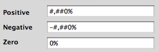

It’s March already and my last post is still “Happy New Year” – unbelievable. I just returned from a very nice, very relaxing month of vacation in Mexico with the family. It was very nice because it made me remember and realize how important family contact is for all of us, who are growing accustomed to being isolated, being so far away most of the time. While we were in Mexico we celebrated Karina’s 3rd birthday (she’s a big girl now!) and we had Fabiola’s baptism, we visited lots of nice places, we ate lots of awesome food, and my machine failed 4 days after we arrived, so I was really disconnected, which was both good and bad.
Anyway, so much for today. I’ll try to write more often during the rest of the year.
Tags: family · life · Personal
Soon it will be time to begin working on dinner for tonight, so while there is still time: Happy New Year to everyone! All the best for 2009, may it be a good year for you.
Tags: 2009 · new year · Personal
I just finished the ugprade to Wordpress 2.7. I was more careful than usual given the big update (normally I just overwrite the files, this time I actually followed the instructions), but everything apparently went fine. I really like the new admin screen, it’s much cleaner and clearer. Please let me know if you find anything broken.
 The Akismet stats screen is really nice too. Check out this impressive pie chart of spam-vs-ham on my blog. And I don’t get that many comments. Incredible.
The Akismet stats screen is really nice too. Check out this impressive pie chart of spam-vs-ham on my blog. And I don’t get that many comments. Incredible.
Tags: Site news · spam · wordpress
For some time I have been using this technique (with the variation mentioned in my comment: use the application also as the stack overlay icon) to clean my Downloads stack in the OSX dock. The only problem with using an Automator app is that it is quite slow, so I have replaced it with a shell script that does the same thing: remove every file in the Downloads directory except itself. I have made an OSX application from the script using the fantastic Platypus, and you can download it here. To use it:
- Unpack the zip file and put the ” Clean Downloads stack” application in your Downloads folder.
- Run the following command:
touch -mt 202001010101.01 " Clean downloads stack.app"
If you want to roll your own, here’s the script (which you can find inside the app as Contents/Resources/script:
#!/bin/bash
DIR="$HOME/Downloads"
cd $DIR
ls -1 | grep -v 'Clean downloads stack' | sed 's/^/rm -rf "/; s/$/"/' | bash
This does the same as the Automator workflow from the original hint, but much, much faster. Of course, you may want to change its icon to match your selected overlay icons.
Enjoy!
Tags: bash · macosx · Tips & tricks · tools

I spent a few minutes today trying to figure out why, when setting a value to zero in an NSTableView, the number formatter I had associated with that column (to add a percentage sign to each number) was not being applied. Eventually, I realized that zero is a special case for NSNumberFormatter, and by default the percentage sign was not there. Adding it solved the mystery.
Tags: cocoa · macosx · Programming · wiltac
A new release of my comic-grabbing script Grabcartoons is out! It includes many updates and fixes, a new ability to define site-wide “templates” to easily fetch any comic from a hosting site (templates are included for comics.com and gocomics.com), a new option to choose and fetch a random set of comics, and more.
As usual, tip of the hat to Ben Kuperman for encouragement, testing, coding and ideas.
Enjoy!
Tags: comics · grabcartoons · Software
I get most of my desktop background pictures from either vladstudio or the NASA Image of the Day site, both excellent sources of fantastic images. To make it easier to fetch a particular image, I have created two Automator workflows, which you can download here:
Get image from Vladstudio.zip
Get image from NASA image of the day.zip
To use them, unzip and place the .workflow files in your ~/Library/Scripts/Applications/Safari folder – by putting it there they will appear at the top of the script menu when Safari is the active application (if you don’t have it enabled, you can do so by running AppleScript Utility, found in /Applications/AppleScript).
Before you use them, you should configure them to your settings. Open the scripts in Automator and change the following:
- The resolution of the image you want. In both scripts it is found in several of the steps (either as “1600×1200″ or “1600-1200″, make sure you change all of them and use the same format as before). The NASA site supports 1600×1200, 1024×768 and 800×600, Vladstudio in addition has 800×480, 1024×600, 1152×864 and 1280×1024.
- The folder where you want to download the images. Double click the “DesktopImagesFolder” in the list of variables at the bottom of the Automator window, and select the folder where you want to put the images.
- If you don’t have Growl or don’t want notifications, simply click the “X” button on all the steps in each workflow that mention Growl or growlnotify.
Once you customize and save the scripts, you should be able to select the corresponding script when viewing an image on either site, and the appropriately-sized image will be automatically downloaded and saved. Make sure you don’t navigate to a different page or tab in Safari until the script has run.
Enjoy!
Tags: howto · image · macosx · nasa · Tips & tricks · vladstudio
This is documented by Apple but I had never realized it: if you put a Mac in Firewire Target Disk Mode, its DVD drive is also available, and it can be used to boot, for example, a machine that does not have a DVD drive (hold down Option while turning the machine on to access the Startup manager). Very useful! Somehow I had always assumed only the machine’s hard drive was visible in TDM.
Tags: booting · dvd · firewire · howto · Mac · tdm · Tips & tricks
For a long time, I have automatically posted my delicious.com bookmarks, using the most excellent Postalicious Wordpress plugin. However, now that my FriendFeed feed is in the sidebar, this seems redundant. The FF feed includes not only the bookmarks, but a lot of other activity, such as my Google Reader shared items, additions to my LibraryThing catalog, and a lot more. Also, with my posts now being automatically posted on my Twitter feed, I found myself wondering “do I really want to put this on Twitter?” every time I was going to bookmark something.
So, if you are subscribed to my RSS feed (you know who you are, all three of you) and would like to continue seeing my bookmarks, please subscribe directly to the delicious feed, or to my FF feed. Thanks.
Tags: Site news
Today I learned how to add support for undo/redo operations using NSUndoManager. This was completely new to me, and I was surprised at how cleverly done it is – essentially, for every operation that you want to undo, you provide the “inverse” operation, and NSUndoManager takes care of keeping them in appropriate stacks for undo/redo, and even of enabling/disabling the corresponding menu items.
As I advance through the book, I am more amazed at how much support Cocoa provides for all sorts of things. On an interesting counterpoint, I was surprised to see how complicated it is to automatically begin editing an entry in a table after inserting it. I would have expected the corresponding NSArrayController to support this, since it is such a common thing to do.
Tags: cocoa · macosx · Programming · wiltac